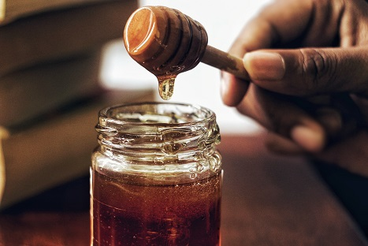
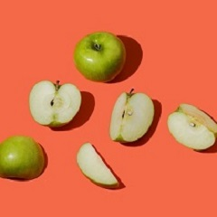
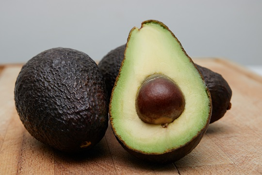
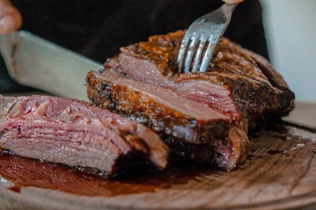

Curiosidades Gastronómicas para aprender día a día un poco mas...
Envíanos las tuyas y las publicaremos en esta página
Curiosidad 1
La Miel tiene fecha de caducidad?
Por su puesto que sí, pero dada su composición de alto porcentaje de agua, azúcar y una gran presión osmótica, la miel bien conservada pueder ser ingerida hasta 2 o 3 años después de ser envasada.... Lo sabías?
Curiosidad 2
Existen semillas peligrosas para ingerir?
La respuesta es sí, una fruta tan habitual como la "Manzana" puede jugarte una muy mala pasada, sus senillas de ser consumidas en exceso pueden originarte un buen dolor de estómago; dado que estas contienen amigdalina, una sustancia que en cantidad es precursora del Cianuro !!!
Curiosidad 3
Algo muy bueno en proteínas
Sabías que la Palta o Aguacate es el alimento más rico en proteínas que nos entrega la madre naturaleza, posee más proteínas que cualquier otra fruta y se lo puede combinar de muchísimas maneras, tanto en ensaladas, cremas, acompañamientos o incluso postres. Unicamente tendrás que tener cuidado si posees aves, si escuchaste bien aves, dado que resultan realmente muy tóxicos para estos pequeños animalitos pero un manjar para nosotros.
Curiosidad 4
Carne al plato
A nivel mundial el país con mayor consumo de carne es EEUU, seguido de Australia y nuestro querido pais Argentina; mientras que el pais con menor consumo de carne de vaca es India, allí estos animales son sagrados.
